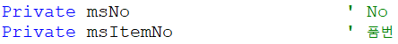
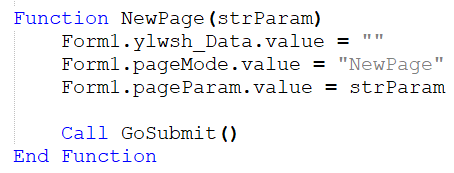
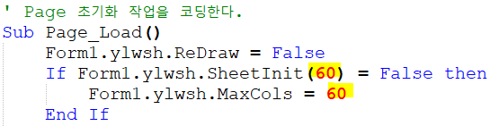
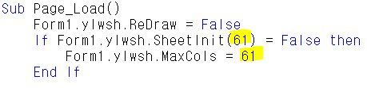
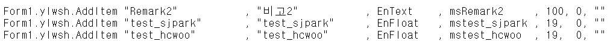
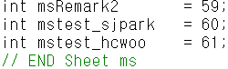
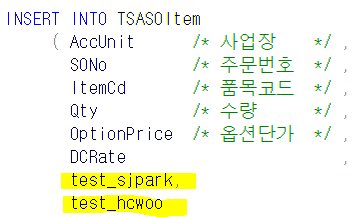
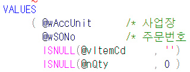
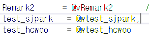
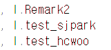

2/28 GNI 등록
G&I
1. 조회모음 (입력 등 다른거 불가능하고 조회만 가능)
- SP로만 굴러가는 화면, 현황화면
(Save, Check없고 Query SP만 있음)
- ylwa 로 시작함 (ylwa00000_jsb, SCTQry_ylwa00000_jsb)
ylwa + 숫자 5자리 + _업체명
ylwa 00000 _jsb
SP명 : SCTQry_ylwa00000_jsb
2. 폼(화면)
- 확장자
1. aspx
2. cs
3. resx
4. csproj
5. webinfo
6. sln (자동으로 만들어짐 / 1~5는 무조건 있어야한다)
- SP
(보통 aspx, cs, SP 고친다 / 나머지는 새로 개발할 때 사용)
aspx - 화면, 데이터를 보여주는 쪽
cs - 데이터, DB갔다오는 애
- 대부분 frm~ 으로 시작 (97%) / dlg~ (3%)
- 조회, 저장 다 가능
SA = 영업 Sales
PU = 구매 Purchase
PD = 생산
HR = 인사
COM = 공통
=====================================
aspx
* 처음 3줄
- Codebehind => 이름 변경
- Inherits (aspx의) 경로 => sjpark - Sales - ~.aspx
\<HTML> 부분 (처음부터 끝까지 이긴함)
1. 화면의 컨트롤 부분 (속성 정하기)
\<변수>값123\</변수>
+. 58번 서버에서 수정하면 더 편하다
2. 변수

시트에 필요한 변수 작성 (EX. No, 판매구분 등등)
(마스터 부분은 id가 있기 때문에 변수 설정이 필요 없다)
양식 : ms~
고객사 : 컬럼 추가해주세요~
=> ms~ 추가
3. Function (함수) (Ace의 툴바)

aspx => 화면에 보여주는 부분이므로 => JumpOut
화면에 있는 데이터를 긁어가서 점프하기 때문에
cs => JumpIn 다른 화면이 준 데이터를 보여줌
4. Page_Load() (제일 중요 / 거의 이거만 고침)

순서가 중요 => 60 => 전체 컬럼 갯수
G&I 의 가장 큰 특징 중 하나가 특징대로 출력한다는 점이다
Ace에서는 컬럼 추가 시 위치는 별도로 지정 안해도 되지만
G&I는 순서가 정해져 있기 때문에 중간에 추가하면
다시 일일히 뒤로 내려야한다
5. 코드도움 함수 (Sub txt\~\~~_CodeHelp(IsDblClick)
코드도움 추가하려면 이걸 하나 추가하면 된다
6. Private Sub ylwsh_Change(Col, Row)
====
영림원 시트
사용자가 시트를 바꿀 때
ex. 수량, 판매단가 쓰면 자동으로 판매금액 나오는 것
============================
Ksystem.NET - bin -
cs는 dll파일로 되어있다 (
(
61.250.183.58 - 회사 서버 (yjkwon / 1003)
너무 옛날 버전이라, 윈도우 8이후부터는 개발이 안됨
그래서 xp인 회사 서버를 사용
aspx를 보려면 csproj를 봐야함
Ctrl Shift B => 컴파일
(aspx, cs에서 수정했던 부분이 들어가있는 bin폴더를 자동으로 만들어 생성
=> dll파일)
단순 화면, 디자인 수정은 dll파일 생성 안됨)
새로운 dll파일을 복붙하면 서버에 옮기는데 시간이 걸려서 컴퓨터 모두 렉걸려서
보통 점심시간, 18시이후에 올린다
)
58번 서버에서 수정 후 컴파일 => 생성된 dll파일을 1번서버 (Ksystem.NET–bin에 붙여넣기)
* cs
aspx 수정 및 저장 후 F7을 누르면 cs에서도 자동으로 생성
저장도 순서대로 저장해야함
SP도 저장순서 동일
(순서로 취급하기 때문에 이름이 달라도 상관없다)
SetToolBar
0 - 사용안함 => 아이콘이 회색되면서 클릭 불가
1 - 사용
SetComboAndVar
콤보값 넣어주기
TDAMajor => 앞에 _안붙음
SetDefault()
- ex. YMD
===========

- SP
Ctrl + H => Site_Init => sjpark 이름 변경하고 끝
======================================
61.250.183.58 - 옵션표시
로컬리소스 - 자세히 - 새볼륨 d 체크 - 확인 - 연결
ybheo
0930
2개열기
탐색기 - 기타:d - ksystem \~\~~ : sjpark을
이 컴퓨터의 d드라이브 ksystem.net에 복붙
=> 끝까지 들어간 후
csproj파일 열기
오른쪽 aspx 파일 열기 => 수정 시작
ctrl shift b => 컴파일 => bin폴더 생성 => 본인 d에 bin 폴더 옮기기
원격 내리고 옮긴 bin확인 - 수정한 날짜 확인해보면 혼자 최신임
==============================================
61.250.183.1
빨간색 위 화살표 - 폼등록
저장 후
영업/수출관리 - 영업활동 - 수주현황 에서 보인다
뒤에 *이 붙음 => 개발된 화면 => 수주입력* (수주입력** => 버전2)
없으면 표준화면 => 수주입력
수주현황에서 더블클릭 => 점프되어서 수주입력으로 간다
개발된 곳으로 점프 하게 하려면
마스타 및 운영관리 / 운영관리 / 프로그램 / Jump항목 등록
=> 추가개발 =>
저장 sp => ace는 1번 돌지만 G&I는 행 갯수만큼 돈다
=> 오류발생 시 오류 직전까지는 넣도록 할 수 있다
삭제 => 키 값만 넣어서 삭제
1번서버
sysdelv1!@
58번서버
yjkwon - 1003
TSASOItem - 컬럼 (시트정보) 들이 들어가 있다
본인화면에 test_sjpark 컬럼추가
1. ASPX에서 컬럼추가 ==> ksystem.net/sjpark/Sales/SASalesOrder_02_sjpark/ ~ 에 추가
Private 에서 변수 선언
쭉 내려와서
Page_Load 부분에 추가 (맨 마지막에 추가) (맨위에 전체갯수 59 => 60)
19,0,""
2. CS에서 저장하는 부분에 추가 => ksystem.net/bin
==========
SaveSheetValue 끝에 추가
다 하고 => 컴파일 컨트롤 쉬프트 B => dll, aspx 옮기기
3. SP에서 조회, 저장 잘 고치기
58번 - 컴파일해서 dll / 컨트롤영역 쉽게 보기
- 과제
- 시트에 컬럼 추가하기
aspx
- 변수 추가
- 전체 갯수 1 증가

- 시트에 추가

cs
- body 부분 수정 (58번 서버에서 수정 시 body부분 눌러서 열어야 검색해서 찾을 수 있다)

aspx => 1번 서버로 옮기기 => 화면에 나온다
저장 및 조회하기 위해 SP 수정
- SSASalesOrder2Save_02_sjpark





- SSASalesOrder2Qry_sjpark

\<\<SASalesOrder_02_Site_Init.zip>>\<\<0228_GNI등록.hwp>>
\<\<0228_GNI등록.hwp>>